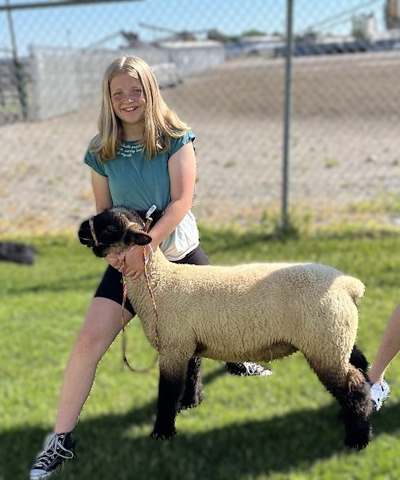
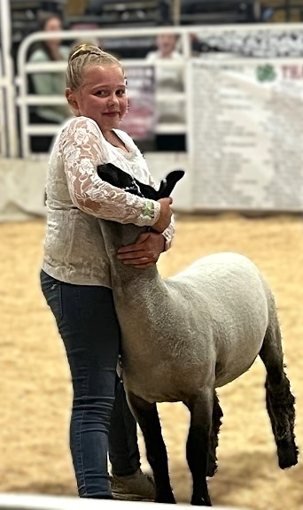

Meeting Notes
Hello Shamrock Shepherds kids and families. Starting to get excited to work with you all again this year. It was a great year last year and so fun getting to know each of you a little bit. To start off, Shannon is my coleader, I am grateful for her help and she keeps everything running smoothly. She is in charge of record books so if you have any questions related to that, she is your girl. We are talking about having record books due mid-July so that there is plenty of time for her to review them before submitting them to the 4-H office.
4-H participation requirements:
- Register on Zsuite and pay fees
- Attend 7 club meetings
- Give a presentation during a club meeting
- Fill out and submit record book in mid-July
- Minimum weight for animal to sell is 110 at final weigh-in at the fair.
In order for meetings to count with your children, they need to be registered on zsuite (go to your family login and update enrollment) and registration needs to be paid for at the 4-H office before meetings start.
Weigh in info and paperwork: Don't forget that the bill of sale, born and raised forms, registration, and fees need to be in to Shay the week before our first weigh-in or your child cannot participate in the fair. For now, it says that weigh-in is between 8 and 10 on Saturday June 6th. They will send me an email soon for a specified time that our club will need to be there. And then after we all weigh-in, I would like to have a showmanship practice at the fairgrounds for 30 to 60 minutes or so. Yes, I am up for keeping it short and sweet, but will see what time allows. If you are not able to get your child's animal to the fairgrounds that day, call Shay and she will talk to you about an alternate day before or after that day. If you are keeping your animals with another family and they have the ability to take them for you, that is fine as well. If possible, we need all of the kids to this weigh-in unless they have work or other family things that you need to be to.
Record Books: Record books are on Zsuite and need to be updated throughout the summer. Your child will add thier stroy, goals, and more information in the book. Record books are on Zsuite and need to be updated throughout the summer. Your child will add thier stroy, goals, and more information in the book. They will need to upload the county materials and add them as well. They will also have an Involvement record to submit. These need to be filled out and submitted in the middle of July for kids to qualify and show at the fair. If there are questions, reach out to Shannon or I.
Born and Raised in Madison County Contest: This is for those lambs that are born in Madison County and then raised here. So those of you who bought an animal that was born here can participate in this contest as well. In order to qualify for this contest, you need the paperwork filled out and submitted before our first weigh-in and then while showing in quality, your lamb will need to finish in the top three of your class with a blue ribbon. And then they will call you back after the quality show for the born and raised show.
Ultrasound: This is done right after final weigh in at the fairgrounds. They take a 10 second or less ultrasound picture of the back of your lamb which will give them a back fat measurement and a muscule measurement. Along with the weight of your animal this is used to determine the quality of your lamb. You will earn a gold, silver, or bronze sticker to put on their poster at the fair depending on what the numbers show here. This will not affect selling your animal or the showmanship or quality shows. Just another contest that your child could get recognized for if their animal is one of the top ranked ones.
Fair below minimum weight requirement: If animals do not reach the minimum weight requirement by final weigh in on Tuesday, August 11th which is 110 pounds for lambs, they cannot be shown in the quality show or sold at the auction. They will be able to be shown for the showmanship show. And we can discuss options for selling them unless you are planning to keep them.
Selling below weight and extra lambs: There is an option to sell extra lambs and below weight lambs to the floor buyer at the fair. The animals not being shown at the fair that you would loke sold at hoof weight will need to be weighed at the final weigh-ins and left at the Fairgrounds to be transported away that night. Lambs that are below weight but will be used for the showmanship show but you want sold to the floor buyer will be loaded on the trailer Saturday with the other animals. If you want to keep your below weight animal after showing it for showmanship, it will need to be taken off the fairgounds Thursday evening after the show is over.
Flyers and Posters: Your child will need to make some fliers to hand out to potential buyers to get their names out there. There will also be details sent in July about booster and add on information. Send this information to anyone that you do business with or family that may support your child. Your child will also need to make a poster to hang up at the fair by their pen. This will help people know who you are and which lamb is yours. We need to be looking for new potential buyers at the fair. Businesses, family, friends, anyone who can use a tax ride off or would like to donate to a good cause. Sometime in July, Shay will send out the information for all of us to share around. Your kids will need to make fliers with information about them and their animal and share it around. But be thinking so that we can get the word out. The number of children participating in 4-H keeps growing each year which we absolutely love, but we need more buyers to help offset that as well. We can't always plan on the same 20 people to buy all of the animals
Pictures: Sometime during the summer, you will need to get nicer pictures of your child with their animal. They do not need to be sheared, just clean and both looking nice. These pictures are used as a thank you note for the buyers and will be printed of by the 4-H office. Shay will need these pictures sometime in the middle of July. She will get some nice buyer posters made and available to pick up after the fair to give to your lamb buyer. These will need to be given to your buyer sometime before checks can be handed out. Plan to get good pictures of your children with their animals for their buyer thank you and these are also great for fliers and posters. I will send a link to all of the pictures that I have taken during meetings. This may help with you finding pictures for record books as well. Don't forget to get some pictures with your animals to add to your record book.
County Materials and other Fair Information: There are a few papers that will need to be filled out and scanned then added to your record book. They are the Animal Science Checklist, Planning Record Sheet, and Market Lamb Growth Chart. Sorry for so many emails today. This one is the The Fair book has the dates and times for the different events of fair week. There are many things that kids can participate in outside of their animal if you would like such as the presentation contest or cookies, cakes, and pie contest, and the livestock judging contest. Some of these have cash prizes that they could get as well. As well there are many things to do and see during the fair. It will be a good reference as well as the rule book.
How to present yourself for the fair: We need to each have a power stance when showing our lambs to show that we are good leaders, have confidence, and show that we have worked hard and that our lamb has worked hard to get to the fair. A good stance is with our feet squarely under our hips, our shoulders over our hips, our arms strong at our sides, our head up, eyes forward or looking toward our judge, and by smiling with our eyes. We need to have eye to eye contact with happy eyes when we can. Look confident and like you have worked hard and know what you are doing. If you have confidence, you can convince the judge that you have worked hard, even if your lamb is a pain and does not listen very well. Show that you care for your lamb and want to help it, but keep your focus on the judge as much as possible. Convince the judge that your animal is great by keeping patience and concern for it at all times. Just keep it together the whole time if your lamb is being a pain or things are not going like you thought. You are selling yourself as a confident showman that has got this. One of the kids mentioned that the judge told him that he was placed lower than the judge would have liked because he did not look confident in what he was doing. So, we need to work on showing confidence in what we are doing. There will also be helpers in the show ring to help kids if their animals are being a pain. Just show confidence, care, and patience for your animal the whole time. And yes, watch the judge at all times. The judge should talk also to them and ask some questions while in the ring. Just be prepared. Learn three different intelligible ways to say that you don't know. (I have never thought of it that way before. I'm not certain, but I would like to find out. That's a good question and I should do some more research to find out. I can't say for certain.) One reason for the 3 different intelligible ways to say that you don't know is while showing, the judge most likely will come up to each of the kids and ask them some questions. Usually, the kids should know the answer for them, but in case they don't it is always good to have many ways to say I don't know to sound more professional. Questions most commonly asked are things like: What is your lambs breed? What is your lambs name? What does your lamb eat? What do you like most about your lamb? Nothing to stress over, just be aware that it will happen and you need to be as professional as possible. Here is where you are selling yourself to the judge as a confident lamb showman.
Minimum that needs done by kids for fair:
- Purchase a lamb and have it by May 29th for weigh in
- Daily feed and water animals
- Daily spend time with animals. 3 on, 3 off days if needed (3 days walk and work hard, 3 days wash and spend time with them)
- Attend a minimum of 7 club meetings
- Give a presentation to your club
- Fill out record book and get to leaders
- Get buyer pictures of you and your animal to Shay in July
- Try to recruit buyers or get boosters for your animal
- Take care of your animal while at the fair (feed and water twice daily and clean out pen daily)
- The barn is open from at least 7am to 10pm daily. Animals may be cared for at any time between these hours. In fact the fair board would prefer that animals are feed and cleaned up after before 8am daily.
- Make a poster for the fair
- Attend or get someone to attend the two 4-H weigh ins and ultrasounds with your animal
- Prepare animal for the show with minimal adult help
- Show animal for showmanship and quality at the fair
- Show your animal at the auction
- Help or get someone to help for you loading animals in the trailers
- Help or get someone to help for you cleaning up our clubs area in the barn
- Write and deliver thank you notes for buyers and boosters for the sale of your animal